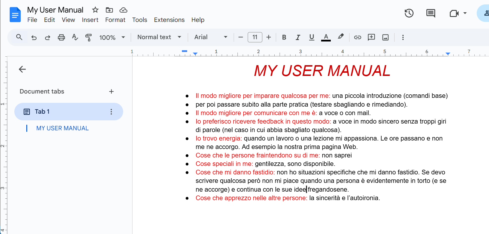
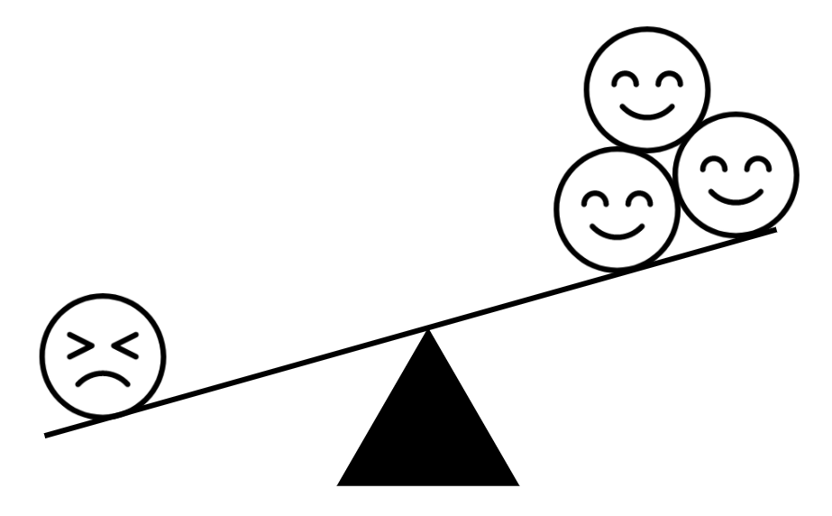

<!DOCTYPE html>
<html>
    <Head>
       <title>Week 3</title>
        <link rel="stylesheet" type="text/CSS" href="style.css">
    </Head>
</html>
<body>
    <div id="logoo">
        <p><a href="https://refresh-academy.org/" target="_blank"></a></p>
    </div>
    <div id="week">
        <nav id="std_nav">
            <a href="About-me1.html"><button class="torna-su">HOME</button></a>
            <a href="About-me1.html#week-list"><button class="torna-su">WEEK LIST</button></a>
            <a href="refresh_info.html"><button class="torna-su">REFRESH ACADEMY</button></a>
            <a href="About-me1.html#contatti"><button class="torna-su">CONTATTI</button></a>


        </nav>
        <h1>WEEK 3</h1>
</div>
    
<article class="body_week" > 
        <p>Attività di gruppo MyUserManual:<br> abbiamo risposto a varie domande personali che possono essere utili per lavori in gruppo. Conoscersi a vicenda è un buon inizio per creare un ottimo ambiete di lavoro tra colleghi. </p>
        <p></p>
    </article>
    <article class="body_week" > 
        <p>Esercizio che spiega le priorità di <strong>CSS</strong>:<br> class, Id, Div p, p</p>
          
        <p></p>
    </article>
    <article class="body_week" > 
        <p>Esempi di <strong>Bias negativi</strong>:<br>
            I bias sono delle forme particolari di pregiudizi o distorsioni, usati per generare opinioni o esprimere dei giudizi, su cose di cui non si è mai avuto esperienza diretta.<br> Per questo, i bias consentono di parlare e giudicare comportamenti spesso sulla base di cose apprese per sentito dire.</p>
          
        <p></p>
    </article>
</body>